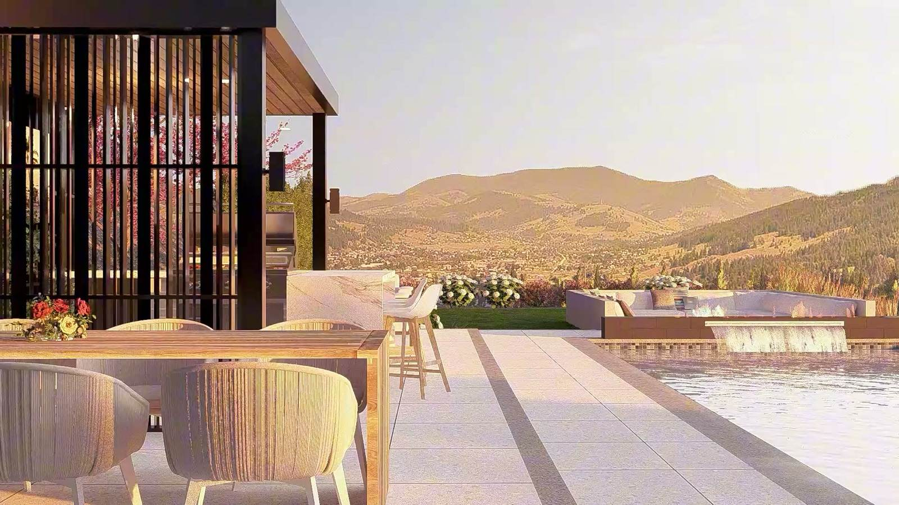

Call (250) 812 6112
Call (250) 812 6112
Call (250) 812 6112
Call (250) 812 6112

Your next summer outside gets decided this winter, not in May. Most people start calling about a backyard once the snow melts, and by then the season is already booking up. Spring is also when you hear the line every homeowner around here knows: you send the enquiry and never get a call back.
Winter gives you time to make every decision with no crew parked in your driveway waiting on an answer. The goal is simple: next July, you are eating dinner on the new patio, not watching the dig start.
Those are the four steps that happen before anyone digs. Get them done over winter and your spring starts with a machine, not a meeting.
Walk it. Your free design consult starts on your property: the slope, where the sun sits, how water moves, how machines get in, and what you actually want out of the space.
Number it. You get a budget range while you are standing in your yard, costed from built-in kits in minutes rather than weeks. It is a budget, not a final quote. You hear what could move it: access, drainage, rock and material choices.
Draw it. Your full 2D and 3D design starts with a kick-off call, has check-in calls along the way, and includes two rounds of revisions. When the drawing is done, you know what it costs to build.
Book it. Permits, any engineering your project needs, and your place in the schedule all get sorted before the dig. You see your schedule before the build starts, not after.
Last summer is still fresh. You remember where the sun sat at dinner, the corner you never ended up using, and where the water ran when the snow went. A good design works around how you use the space in August versus February. Right now you know both.
You also have room to push back. The first drawing you see is not your only chance to change it, and nobody is rushing you because the season has started.
Once the planning is done, your build moves. Blaine's fastest so far, in his words: "Built a cost effective pool and had them swimming in three days from the time we started the dig." That pace does not come from rushing. It comes from every decision being made before the machine shows up, and from one crew drawing it and building it, so nothing gets lost between the plan and your yard.
The consult is free, with no obligation. The full 2D and 3D design is a package you pay for, and you hear exactly what it involves before you commit to anything. Your build quote also won't be the cheapest number you get.
If you want a mow-and-blow contract, a crew that is an hour away, or the lowest price on the street, you are better off calling someone else, and better to hear that now than three weeks in. If you want your yard drawn properly, built by the people who drew it, and still standing up in year five, winter is when to start.
Both, with one crew. Design, construction, planting, pools and lighting sit under one roof, so you are not project-managing three separate companies.
Further than most people expect. The schedule runs full through the season, so the earlier you start, the more of the season you get.
Everything one crew can design and build for you: landscape design, build, planting and lighting in Vernon and the North Okanagan.